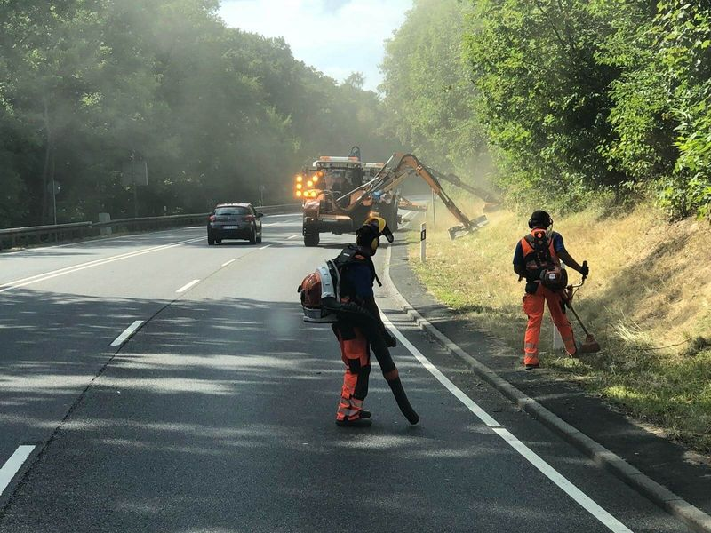

Saison Mai bis Oktober
Mähen an Radwegen
Seitenstreifen an straßenbegleitenden und freien Radwegen. Damit der Weg in voller Breite nutzbar bleibt und Radfahrende in Kurven sehen, was ihnen entgegenkommt.
Die Leistung
Ein Radweg wächst von den Rändern her zu
Gras und Sträucher wachsen von der Seite in den Weg. Was auf der Karte zwei Meter breit ist, ist im Sommer oft deutlich schmaler. Dann weichen Radfahrende zur Mitte aus, und in Kurven sehen sie den Gegenverkehr zu spät.
Wir mähen die Seitenstreifen, schneiden überhängende Triebe zurück und sorgen dafür, dass der Weg nach der Arbeit sauber ist. Schnittgut auf dem Belag ist für Radfahrende rutschig.

So arbeiten wir
Ausleger, wo es geht, Handarbeit, wo es nötig ist
Radwege sind schmaler als Straßen, und es gibt mehr Hindernisse. Darauf stellen wir Gerät und Ablauf ein.
- Radwege neben der Straße
- Läuft der Radweg direkt neben der Fahrbahn, mähen wir ihn oft im selben Arbeitsgang wie das Bankett, mit dem Ausleger von der Fahrbahn aus.
- Freie Radwege
- Auf separaten Wegen ohne Fahrbahn arbeiten wir mit kleinerem Gerät, das auf dem Weg fahren darf.
- Hindernisse
- Schilder, Poller, Bänke und Geländer werden mit dem Freischneider ausgemäht.
- Sauberer Belag
- Zum Schluss blasen wir das Schnittgut vom Weg. Es soll auf der Fläche liegen bleiben, nicht auf dem Asphalt.
Für wen
Für die Träger von Radwegen
Zuständig ist meist derjenige, dem auch die Straße daneben gehört. Bei freien Radwegen sind es oft die Kommunen.
Städte und Gemeinden
Innerörtliche und verbindende Radwege, Wege an Feldern und entlang von Bachläufen.
Landkreise
Radwege neben Kreisstraßen und touristische Radrouten im Kreisgebiet.
Hessen Mobil
Radwege an Bundes- und Landesstraßen, die zusammen mit dem Straßenbegleitgrün gepflegt werden.
Weitere Leistungen
Was wir außerdem mähen und schneiden
-

Mähen von Straßenbegleitgrün
Bankette, Gräben und Böschungen an Bundes-, Landes- und Kreisstraßen. Gemäht mit Ausleger und Frontmähwerk, an Leitpfosten und Schildern von Hand.
-

Mähen Gehölz Mittelstreifen
Gras und Gehölzaufwuchs zwischen den Schutzplanken. Mit Schlegel- oder Häcksel-Mähkopf, das Mähgut wird direkt abgesaugt.
-

Mähen Sonderflächen
Kreisverkehre, Verkehrsinseln, Einmündungen, Lärmschutzwälle und andere Flächen, die in keinen Standardumlauf passen.
-

Mähen Regenrückhaltebecken
Böschungen, Dämme und Zufahrten von Rückhaltebecken. Damit Zulauf und Ablauf frei bleiben und sich auf dem Damm kein Gehölz festsetzt.
-

Gehölzrückschnitt
Äste und Sträucher, die in den Verkehrsraum wachsen oder Schilder verdecken. Rückschnitt, Abtransport und Entsorgung aus einer Hand.


Anfrage
Welche Wege sollen frei bleiben?
Schicken Sie uns eine Karte oder eine Liste der Abschnitte. Wir prüfen, wo der Ausleger reicht und wo Handarbeit nötig ist, und melden uns mit einem Angebot.
Erreichbar Montag bis Sonntag, 7 bis 20 Uhr